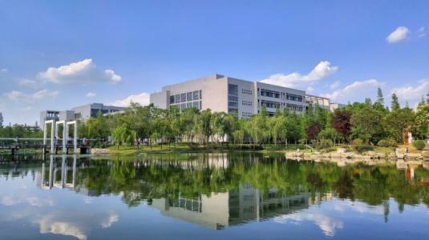

专业设置
- 环境科学与工程
- 测绘科学与技术
- 地理信息科学
- 土地资源管理
- 公共管理
- 
学院简介
2000年6月中国矿业大学从采矿系、资源学院和化工学院抽调相关学科、专业组建了环境与测绘学院。学院设有测绘与地理信息系、环境科学与工程系和土地管理3个系；
1个国家级工程实践教育中心、1个国家级虚拟仿真实验教学中心，1个江苏高校协同创新中心，测绘与国土信息、环境科学和工程2个中心实验室（均为江苏省实验教学示范中心）及江苏省“空间与国土资源信息国际化人才培养基地”；10个校级研究所（3G信息技术应用研究所、测绘与空间信息工程研究所、三下采煤研究所、国土资源研究所、资源环境信息与经济研究所、环境工程研究所、环境科学研究所、地下水科学与工程研究所、土地资产评估研究所、房地产研究所）；拥有地球表层集成模型模拟与数值分析研究中心、中英地理空间信息联合研究中心、动态地理信息研究中心、淮海国土资源研究中心和中非矿山空间地理信息国际合作联合实验室等研究中心。
现任领导
- 院长：李德仁院士 负责全院高层次人才、学科、平台和学生培养等全面工作
- 书记: 李长贵 负责党委全面工作，重点负责干部工作、统战工作、组织工作等。lichgui@cumt.edu.cn
- 执行院长：张绍良 负责行政全面工作，重点负责人才工作、学科建设、平台建设等。slzhang@cumt.edu.cn
- 副书记：王守刚 协助负责党委工作，重点负责学工、团委、思想教育和宣传工作等。cumtwsg@163.com
- 教学副院长：周来 负责本科教学、实验与实践教学和教学条件保障与建设等。zhoulai99@126.com